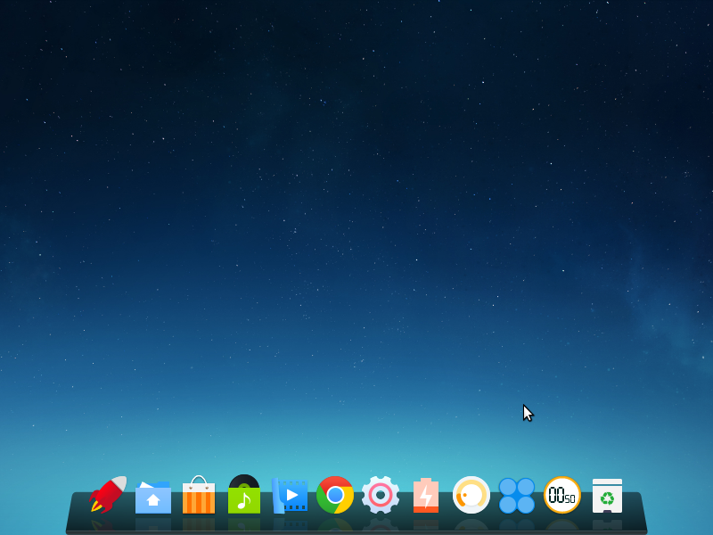
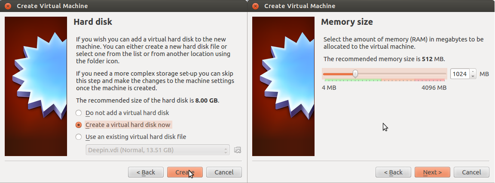
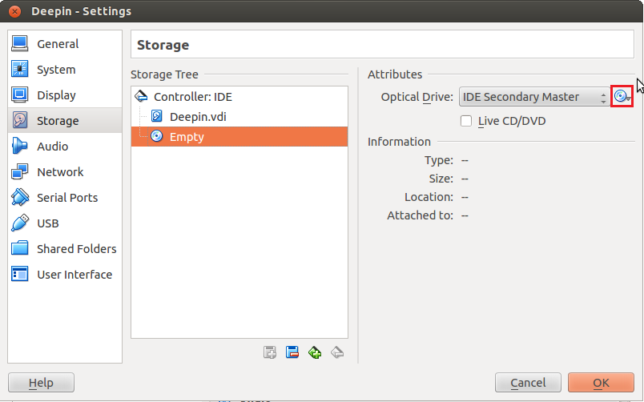
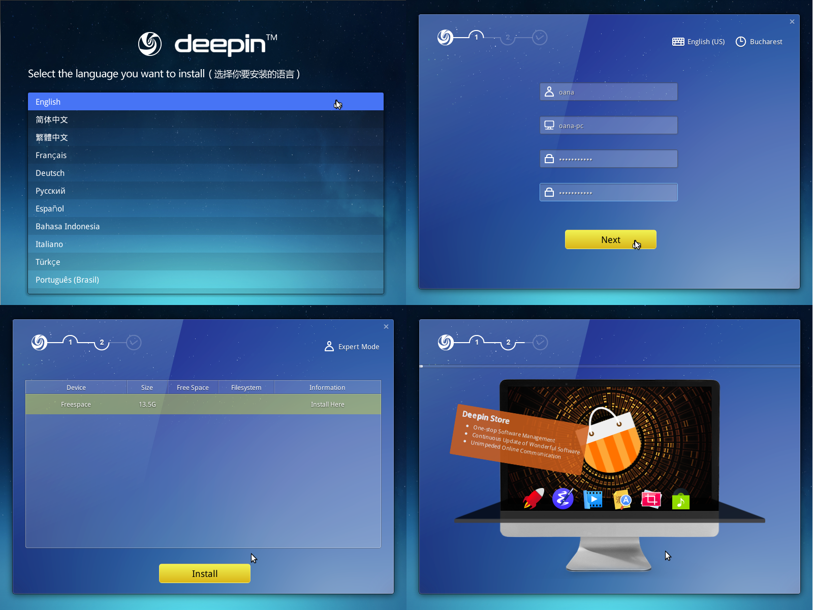
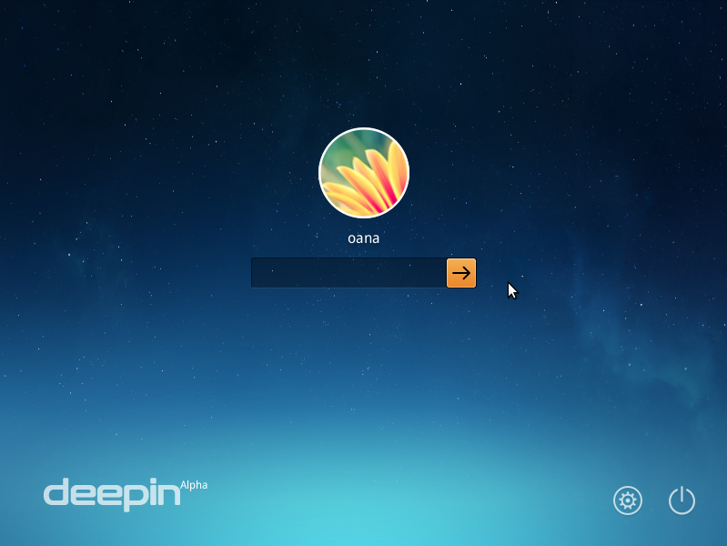
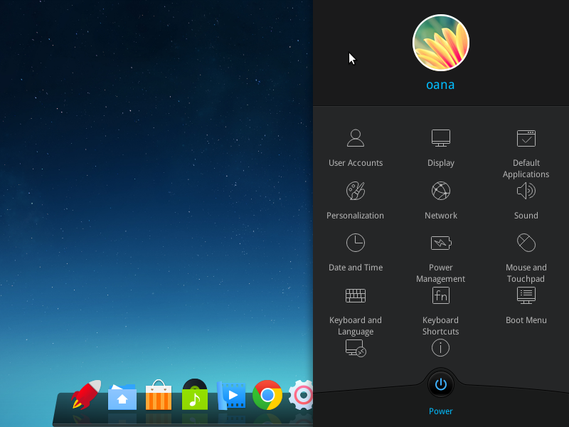
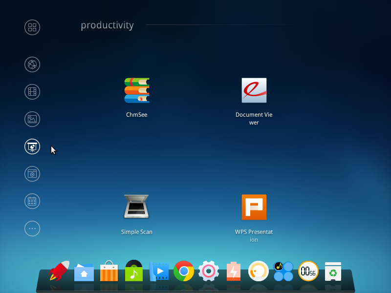
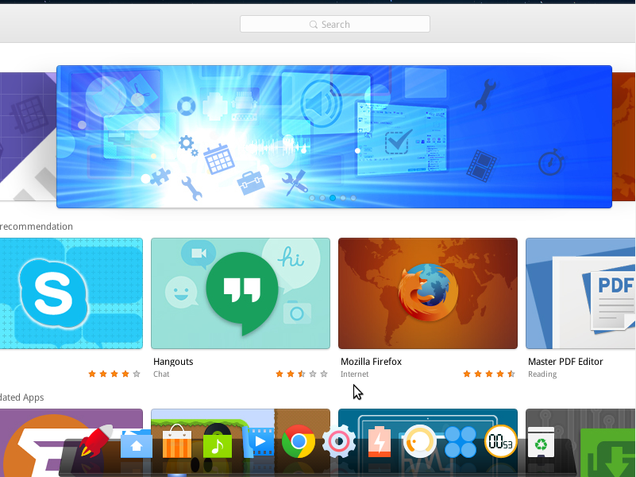
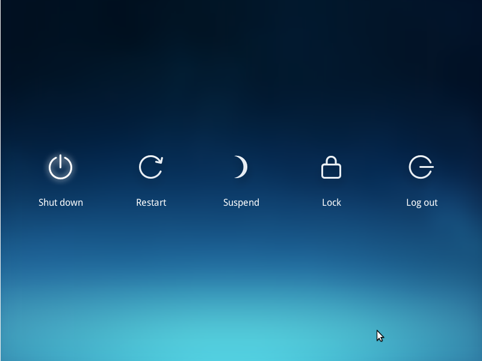

What is Deepin?
Deepin is a Linux distribution, based on Debian. It's unique, user-friendly, and very easy to use. You can download Deepin 2015 Alpha 2 from here. Make sure you download the correct version for you (32-bit or 64-bit). If you don't have it already, you can download Oracle VM VirtualBox from here. These steps work for both Windows and Linux operating systems.
Setting up the virtual machine

Once you have VirtualBox installed, we can step right into the installation of Deepin. Click on the New button in VirtualBox to begin. Write Deepin in the Name field, choose Linux from the Type drop-down list, and choose Other Linux (32-bit or 64-bit). Next, choose the amount of RAM (notice that VirtualBox makes suggestions based on your computer's specifications), and then create a new virtual hard-disk. A new dialog box will open, where you'll set up the virtual hard-disk. You can choose it to be dynamically allocated (it grows in size when needed, up to a limit you set), although many prefer the Fixed size option, since it usually makes the virtual machine faster and does not fragment the host operating system. Pay attention that 8GB are required to install the system, so choose a size greater than that.
Now there's only one step we need to take before we can start out virtual machine. Go to Settings > Storage and notice Empty written next to a little disk icon. Click on it, then click on the highlighted disk icon in the below picture, which will open a drop-down menu. Select Choose Virtual Optical Disk File... then go to the path where you saved the .iso file (downloaded at the beginning) and choose it. Now that you've mounted the image, you can push that Start button!
Installing Deepin
The first screen will let you choose the language. Once you set up the username and the password for the system user in the second screen, you will be asked to partition the drive. In this tutorial we gave the root partition the whole available space. Then click on Install, and watch the demo Deepin gives you of the system, while the files are being copied and the settings are being made. Once this simple installation process has finished, you will be asked to reboot in order to be able to use your brand new Deepin Linux, and here comes a very important part.
If you just simply click on the Reboot button, it will boot from the .iso file once again, leading you to the installation process again. So click File > Close and power the machine off. Next, go to Settings > Storage and choose the .iso file (it's the same place where Empty was located before mounting the image). Click once again on the little disk icon on the right, and choose Remove Disk from Virtual Drive. This is just like ejecting a disk after installing an OS, so it won't endlessly take you to the installation process.
Starting and using Deepin
Now we can Start the machine! Once you type your password, we're ready to go! Deepin has a really good-looking interface, clean, tidy, and neat, making it easier to navigate. When you first open it up, you see a clean desktop and a launcher at the bottom. The flat-styled icons give it a refreshing, modern look.
The system settings appear all in one panel on the right side. You can easily configure the time and date, keyboards, sound, monitors, users and many more. You are also given the ability to change Boot Menu settings.
Deepin comes with a number of pre-installed applications, so you can immediately get to work. The list of applications include Libre Office, Google Chrome, Nautilus (Files), Launcher, Deepin Store, Music Player and Movie Player, Adobe Flash Player and many more. By clicking on the Launcher icon, you can see the applications sorted by name, usage, or category (as seen below).
You can easily download new applications from the Deepin Store. Elegant looking, it shows you recommendations, featured applications, and lets you search for whatever you need.
Powering it off is easy too. Open the Settings Panel and click the Power button. It lets you choose from shutting it down, suspending, restarting, locking, and logging off.
